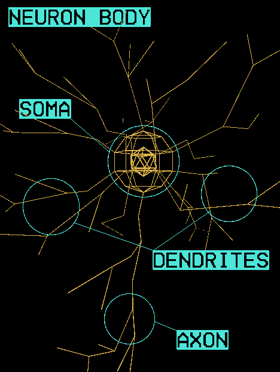

Article:
STDP

В этой статье пойдёт речь об импульсных нейронных сетях и небольших спекуляциях на тему размышлений о дальнейшем будущем данной технологии. Возможно тут даже будет небольшой исторический эксурс.
В качестве источника будет использовано три учебника старый советский [указать сслыку], учебник от Ижикевича по его технологии и более менее современный учебник по нейрокибернетике. И поверх этого мы наложим материалы из современных научных исследований. Так как предыдущие моджели уже успели устареть. Ещё было бы неплохо упомянуть ту самую муху из twitter, которая наделал много шума.